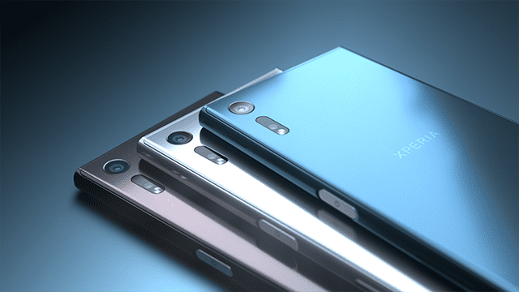
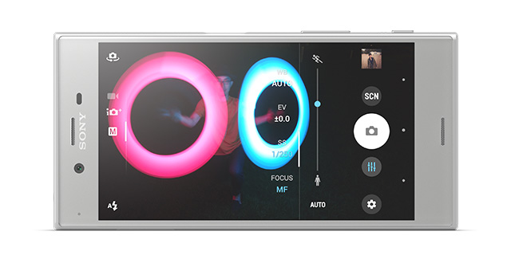

Cải tiến hơn so với thiết kế truyền thống của dòng Xperia, Sony Xperia XZ mang trên mình diện mạo mới - đẹp hơn, sang trọng hơn.
Xperia XZ với nhiều màu sắc để lựa chọn
Sony Xperia XZ được trang bị công nghệ màn hình TRILUMINOS kích thước 5.2 inch cùng độ phân giải FullHD giúp hình ảnh hiển thị tốt, màu sắc trung thực và thời lượng pin được tăng cường đáng kể nhờ màn hình không quá to.
Mang trên mình vi xử lý mới nhất Snapdragon 820 4 nhân 64-bit chip đồ họa Adreno 530, bộ nhớ RAM 3 GB cùng 64 GB bộ nhớ trong. Cấu hình mạnh mẽ giúp Xepria XZ xử lý các tác vụ đa nhiệm tốt, chơi các game với đồ họa cao.
Với cảm biến ảnh 23 MP cùng nhiều công nghệ tiên tiến như chống rung 5 trục, lấy nét bằng laser... Sony Xperia XZ thực sự trở thành một thiết bị nhiếp ảnh di động chuyên nghiệp. Hình ảnh chụp từ Xperia XZ có độ phân giải tốt, lấy nét nhanh cùng nhiều tính năng độc đáo.
